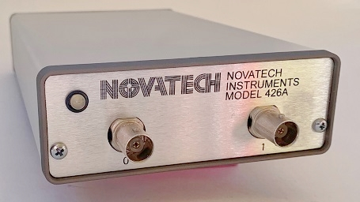

426A

Model 426A 400MHz dual-channel DDS signal generator. The 426A generates two channels of low-distortion sine wave signals.
Each channel is independently programmable in frequency, phase, and amplitude from 300kHz to 400MHz with 10 microhertz resolution. A line-voltage AC adapter and NT Terminal Windows software are included. See the 426A data sheet for additional details.